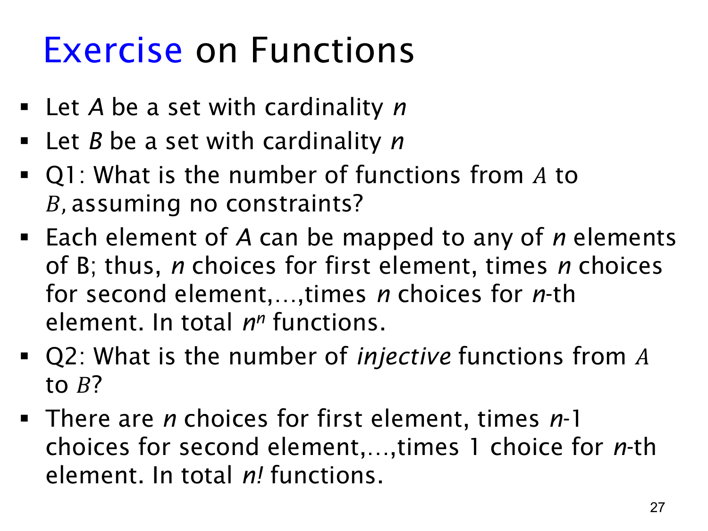

L1.4 · 第 27 页讲解原文
查看这一页课件

从 n 元集合到 n 元集合有多少函数
设有限集合 A,B 都有 n 个元素。本页先问不加单射限制时，从 A 到 B 有多少个函数。对 A 的每个元素，都可以独立地从 B 的 n 个元素中选一个作为输出；不同输入允许选到同一个输出。所以总数是
n 个因子n⋅n⋯n=nn.
例如 n=2 时，若 A={a1,a2}、B={b1,b2}，两个输入各有两种输出选择，共有 22=4 个函数。
第二问要求函数单射，不同输入不可重复使用同一个输出。固定 A 的一种列举顺序后，第一个输入有 n 种选择，第二个只剩 n−1 种，依次减到最后一个输入只有 1 种。因此总数是
n(n−1)⋯2⋅1=n!.
这里的“第一个、第二个输入”只是为了计数而临时选的处理顺序，并不改变集合本身无序的性质。每个完整的输出分配只会按这个固定顺序被数到一次。由于 ∣A∣=∣B∣=n，单射用完 n 个不同输出时也必然覆盖 B；这一点将与后面的满射概念相连。
课件的逐项乘法叙述主要针对 n≥1。若 n=0，从空集到空集有一个空函数，单射数为 0!=1；把无约束函数数写成 00 时需采用组合计数中的 00=1 约定，或直接单独处理空集情形。